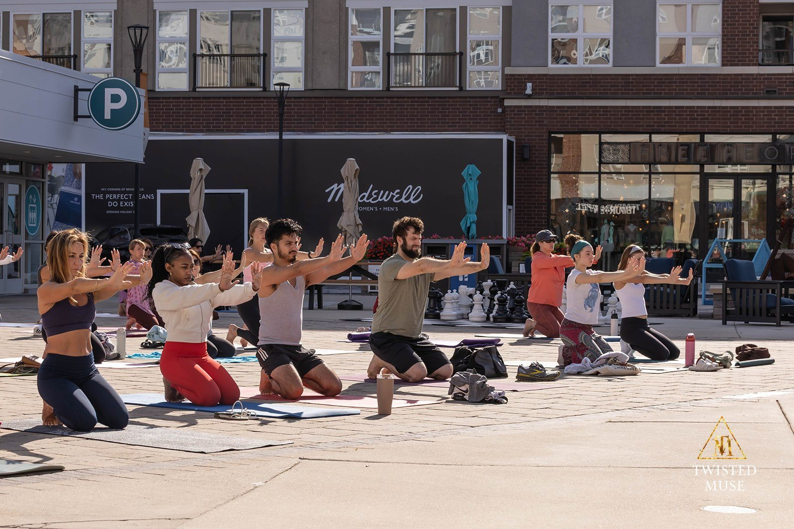
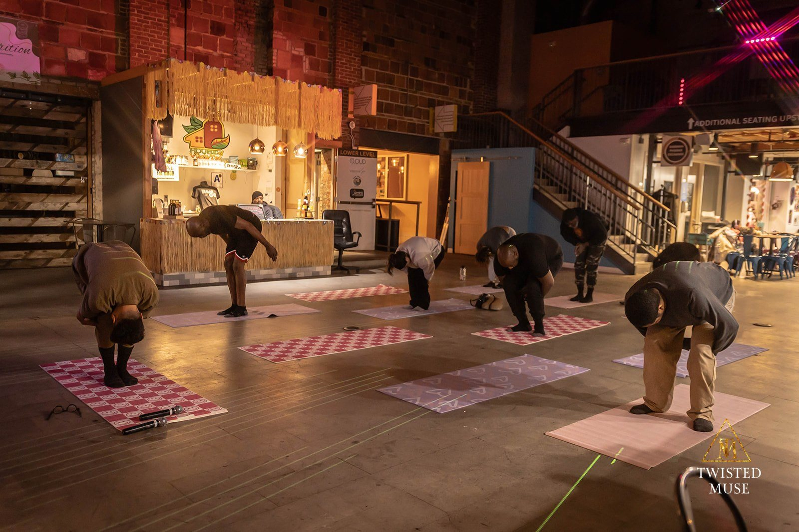
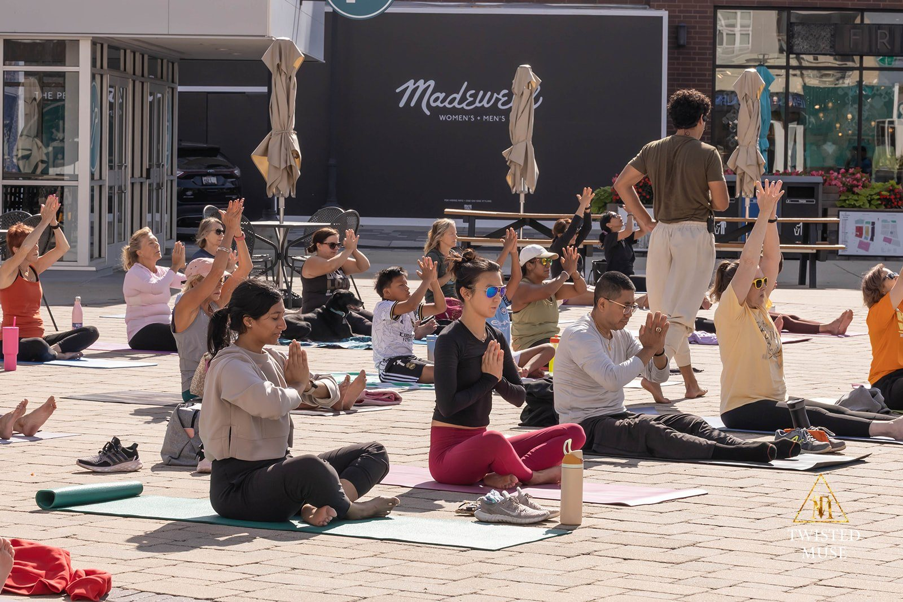

Yoga for Life
Donation-based and partner-supported yoga designed to meet people where they already gather.
Community Yoga for Life practice · Photography: Twisted Muse / Anyssa Camacho.
The Heroic Yogi blog on Patreon shares reflections from the school’s unfolding practice. Read, notice what speaks to you, and follow that curiosity into study, community participation, or service.
Explore Heroic Yogi on Patreon →
Donation-based and partner-supported yoga designed to meet people where they already gather.

An eight-week nervous-system and breathwork pathway that opens when a cohort is scheduled.

Operational Resilience & Recovery Training is an applied pathway developed for military and professional contexts.
“More relaxed, More energized, More connected, More curious”
David Samuel · Yoga For Life participant · August 27, 2026
Participant-reported experience following a community class. Individual experiences vary.
The school tracks immediate participant feedback conservatively and distinguishes self-reported outcomes from clinical claims.
See current impact reporting →Public sites, community organizations, schools, faith communities, and employers can explore recurring or pilot wellness offerings built around their setting.
Explore PartnershipBegin with what draws you here. Students, volunteers, creators, and partners each help the school grow through participation and shared responsibility.
Attend a current public class and build a rhythm of learning with others.
Find current classes →Express interest in setup, welcoming, outreach, and practical class support.
Offer your time →Explore hosting or supporting a community wellness offering with the school.
Explore partnership →Current opportunities depend on the project, preparation, and available supervision. Community volunteering begins with the school’s interest form; apprenticeship fieldwork follows an individually approved placement.
Students bring their attention, volunteers help welcome and prepare the space, and partners make room for practice in community life. Each person helps sustain a place to return.
